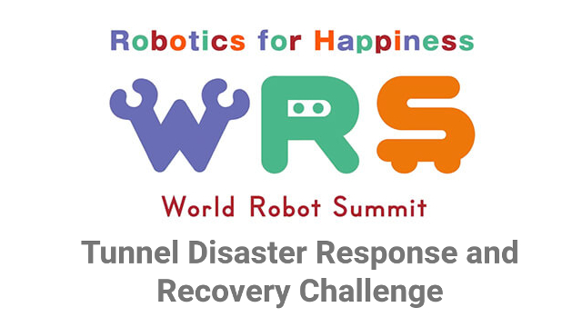

World Robot Summit(Competition) Tunnel Disaster Response and Recovery Challenge Official GitHub Organization
Hello World Robot Summit(Competition) Tunnel Disaster Response and Recovery Challenge Participators!
This is a face page of the World Robot Summit(Competition) Tunnel Disaster Response and Recovery Challenge
GitHub Organization to share models, scripts and so on.
Please find some nice information for you from this organization!
If you want to know this league, we recommend not only checking the
codes of this league, but also checking the league mailing-list.
You can find the link for the mailing-list at the end of this page.
And you can find more details from the World Robot Summit(Competition) Tunnel Disaster Response and Recovery Challenge portal material site.
=======================================================
SOFTWARE IMPORTANT INFORMATION for WRC 2020
# ABOUT Choreonoid
Version 1.8 with a tag specified by the development version management.
EX.) git clone -b tag https://github.com/choreonoid/choreonoid.git
# ABOUT Robotic middle-ware
* Recommend using ROS1 Melodic
We have got information that the choreonoid developer will support the connection between choreonoid and ROS1.
* Not recommend using OpenRTM
We got information that the choreonoid developer do not have any plan to support the connection between choreonoid and RTM.
There is information that the RTM version 1.1.2 and 1.2.0 were used with older choreonoid. But there is no information on whether the choreonoid developer will support.
# ABOUT AGX Dynamics
Considering version.
Currently, Version 2.21.3 used in WRS2018 is the newest version confirmed by the choreonoid developer.
=======================================================
Codes and it's descriptions.
Edited: 7th Feb. 2020